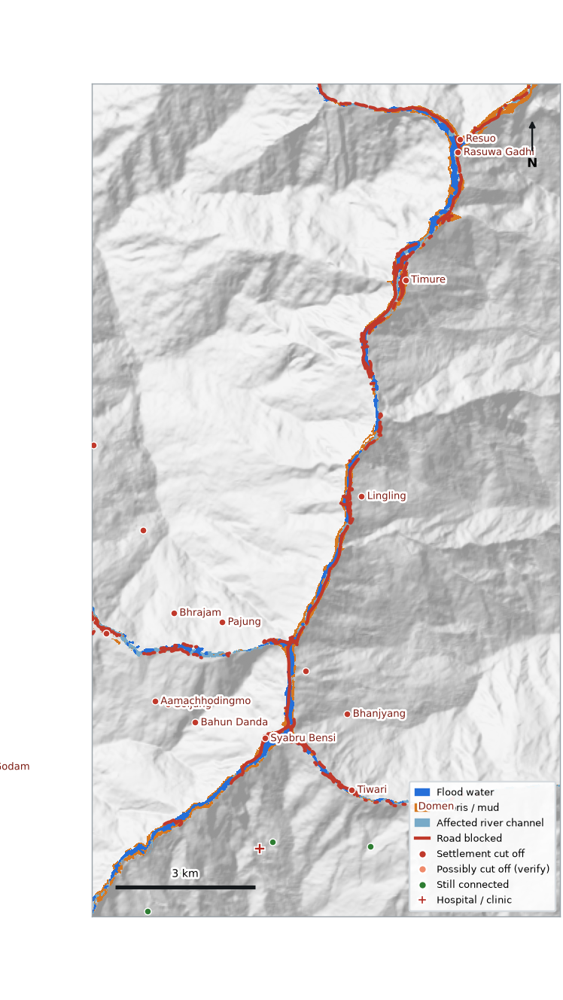

Flood & debris situation report — Rasuwa — Timure to Syabru Bensi (Bhote Koshi)
Event date 26 August 2026 · generated 01 Oct 2026, 17:16 by Baadhi from satellite data · Educational prototype — verify on the ground
5.11 km²flooded or debris-covered (2.29 km² water, 2.04 km² debris/mud)
613buildings inside the footprint (+86 at its edge) of 6,378 mapped
22settlements cut off by road from the nearest hospital or town (1 still reachable on foot)
35.16 km · 27of road under water/debris where it blocks the way · bridges over an affected reach (verify)
Settlements cut off by road
| Settlement | Hospital/clinic before | After | On foot now |
|---|
| Syabru Bensi | 24 min | none by road | no mapped path |
| Tiwari | 31 min | none by road | no mapped path |
| unnamed hamlet | 33 min | none by road | no mapped path |
| Domen | 34 min | none by road | 157 min |
| Lingling | 36 min | none by road | no mapped path |
| Pajung | 38 min | none by road | no mapped path |
| Timure | 41 min | none by road | no mapped path |
| Bhrajam | 41 min | none by road | no mapped path |
| Bahun Danda | 43 min | none by road | no mapped path |
| Rasuwa Gadhi | 46 min | none by road | no mapped path |
22 cut off in total. Travel times from OpenStreetMap roads (typical speeds), nearest facility within ~25 km.
Roads blocked (longest first)
| Road | Blocked stretches | Under water/debris |
|---|
| unnamed unclassified | 56 | 9.7 km |
| unnamed primary | 31 | 8.3 km |
| unnamed path | 55 | 6.3 km |
| unnamed trunk | 19 | 3.1 km |
| Pasang Laahamu | 10 | 1.8 km |
Health facilities
In or next to the footprint: none of the mapped facilities.
Data used
- Sentinel-1 radar: track 85 (ascending): before 2026-07-23, 2026-08-04, 2026-08-16 → after 2026-08-28; track 121 (descending): before 2026-07-26, 2026-08-07, 2026-08-19 → after 2026-08-31 — skipped (covers 4% of the area); track 19 (descending): before 2026-07-31, 2026-08-12, 2026-08-24 → after 2026-09-05
- Sentinel-2 optical (clear pixels): before 2026-08-24, 2026-08-12; after 2026-08-27, 2026-09-01, 2026-09-08
- AI flood model: resnet18 U-Net trained on Kuro Siwo
- Copernicus DEM GLO-30 · OpenStreetMap as of 2026-08-24 (before the event, Overpass history)
- What found the affected area (km², kinds overlap): AI model 2.91 · radar change 1.25 · radar water 0.04 · optical change 3.00 · optical water 0.35 · terrain fill 0.11

What this report cannot tell you
- Sentinel satellites revisit an area only every few days: what happened between passes, and water that drained before the next pass, is not seen. No warning ahead of an event is possible.
- Radar cannot see steep slopes facing away from or towards the satellite (shadow, layover); optical images need clear sky.
- At 10 m resolution a building "hit" means it lies in the flood/debris footprint, not that it collapsed.
- Buildings, roads and settlements come from OpenStreetMap before the event; anything not mapped is not counted.
- Travel times assume typical speeds per road type; roads outside the analysed area are assumed passable.
Contains modified Copernicus Sentinel data 2026. Produced using Copernicus WorldDEM-30 © DLR e.V. 2010–2014 and © Airbus Defence and Space GmbH 2014–2018 provided under COPERNICUS by the European Union and ESA; all rights reserved. © OpenStreetMap contributors (pre-event snapshot, ODbL). Flood model trained on Kuro Siwo (Bountos et al., NeurIPS 2024, CC BY 4.0).